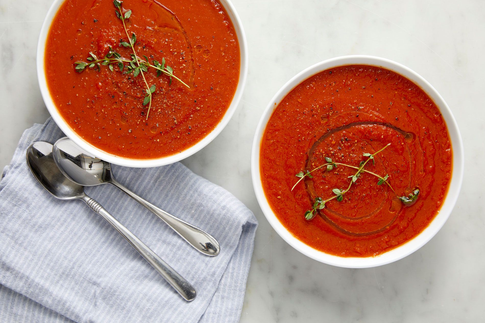

Fresh Tomato Soup

This simple, quick and easy recipe for homemade fresh tomato soup is perfect to make when tomatoes are ripe in
gardens
and farmers' markets for a delicious summertime treat.
This tomato soup recipe uses fresh tomatoes and will remind you of your mom's famous cooking. Sure the can of
tomato
soup works in a time crunch, but nothing beats the delicious flavors of a soup you made from scratch with fresh
ingredients. So say goodbye to canned soup forever and hello to your new favorite tomato soup recipe.
Ingredients
- 4 cups chopped fresh tomatoes
- 1 slice onion
- 4 cloves garlic
- 2 cups chicken broth
- 2 tablespoons butter
- 2 tablespoons all-purpose flour
- 1 teaspoon salt
- 2 teaspoons white sugar, or to taste
Steps
- In a stockpot, over medium heat, combine the tomatoes, large slice of onion, garlic cloves, and chicken
broth. Bring to
a boil, and gently boil for about 20 minutes to blend all of the flavors. Remove from heat and run the
mixture through a
food mill into a large bowl, or pan. Discard any stuff left over in the food mill.
- In the now empty stockpot, melt the butter over medium heat. Stir in the flour to make a roux, cooking until
the roux is
a medium brown. Gradually whisk in a bit of the tomato mixture, so that no lumps form, then stir in the
rest. Season
with sugar and salt, and adjust to taste.